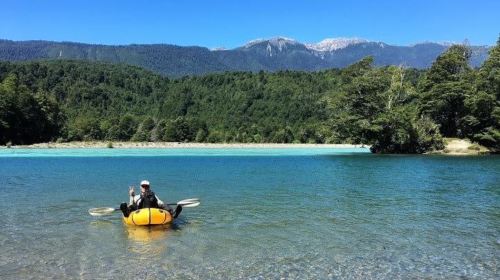

DIY Packraft Review
Note: I dislike “unboxing” reviews because I don’t believe that you can judge a piece of gear until you’ve used it. Instead, gear should be extensively tested before commenting. My hiking partner, K, and I spent four months using two DIY Packrafts extensively while packrafting along the Greater Patagonia Trail. I paid full price for both DIY Packraft kits and was not asked or compensated to write this review. All opinions are my own.
—
Background
DIY Packraft is the passion project of Matt, of British Columbia, Canada. Starting in 2015, he began designing and creating homemade packrafts and eventually launched the site www.diypackraft.com, where frugal rafters can purchase kits and all the necessary supplies to construct their own lightweight packraft. It is no doubt a pretty impressive operation for one man.
I say “frugal rafters,” because the main selling point for the DIY Packraft is its affordability. While Alpacka Rafts (the gold standard in packrafting) regularly retails for more than $1000, I purchased two DIY kits (including all add ons and extra supplies) for around $300 total.
Before I get into the weeds about the construction and application of our DIY Packrafts, I first want to provide some specs. Our rafts varied in color (K’s is blue, mine is yellow), but they have the same features:
Version 2 design
Size medium
210 denier fabric
Double layer floor (essentially 420 denier)
Boston valve & top-up valve
Four homemade D-ring tie downs at the front of the boat
On my scale, each raft weighs approximately 60.80 ounces.
Over four months, K and I rafted roughly 500-600 kilometers of remote rivers and lakes through Chile and Argentina. Most of the lakes were calm, but some got choppy when the wind picked up. Rivers were generally Class I with a couple Class II rapids (namely the Upper Rio Palena). Our rafts also doubled as groundsheets throughout the trip.
Construction
First of all, heat sealing is hard. Matt estimates that a single raft takes 15-25 hours to make, but in my experience the number was in excess of 40 hours per raft. Perhaps I’m a slow heat sealer. I worked with four different irons, ultimately finding this one to work best, though it’s far from perfect. In fact, I ended up going through multiple versions of that iron, and found that they noticeably varied in terms of temperature and build quality. As far as I am aware, there is no commercially available iron designed for heat-sealing TPU coated nylon. Model airplane and sewing irons, while appropriate in size, have crude temperature gauges and struggle to maintain the ideal temperature. The heat-sealing irons used at commercial raft builders like SOTAR costs hundreds of dollars and are impractical for DIY applications. There’s a reason why DIY Packrafts cost 80% less than their commercial counterpart: the human labor that goes into building them is strenuous!
Laying out all the pieces before starting to heat seal. Everything was well marked and straight forward.
That said, I found DIY Packraft’s kits to be well made and of a high standard. The design of the raft was impressively professional; on many occasions we had people ask, “you made that?” in disbelief. Matt’s background in mechanical engineering must have included some computer automated design software, because his geometry is solid. The kit pieces were accurately cut and fit together nicely. If you take your time, the end result looks quite professional.
An important construction consideration: For anyone considering a DIY Packraft, color matters! Since the yellow fabric is more translucent than the blue, it was easier to determine if it is properly heat sealed because the bond is more visible. It was also easier to see inside the tubes and bond them to the floor (V2 Kit Step 3). For these reasons, I recommend staying away from dark colors like blue and making a light colored raft.
A close up I took during construction of some heat sealing issues. The dark spots are where the yellow and black fabric (underneath) formed a strong bond. You can see many spots where the black strip didn’t bond that I had to fix.
Use
As mentioned previously, we rafted somewhere between 500 and 600 kilometers in total with our DIY Packrafts, and I quickly grew comfortable and confident with what these rafts can handle. For our purposes along the Greater Patagonia Trail, DIY Packrafts required constant repair, and we were lucky that they lasted through our trip.
Look closely and you can see both packrafts laid out as ground sheets. My yellow raft on the left, K and her blue raft on the right.
DIY Packrafts are plenty sturdy to handle Class I and even occasional Class II water. We rafted full days on end and up to 60 kilometers in a single day with our rafts. We even rafted between icebergs and glacial outlets. We used our packrafts as groundsheets (a decision I was initially nervous about), and I was impressed that over four months of daily use resulted in no punctures or holes.
While it is possible to make an inflatable floor or custom seat, we used our sleeping pads as seats within the boat, which worked nicely. My cut-down full-length NeoAir XLite and K’s torso-length NeoAir XLite both fit nicely within the medium DIY Packrafts floor space. I also found that their R-value did a good job of insulating my lower body from the cold water.
The first step in boat repair is finding the hole(s). Here I’m using soapy water to point out where air is escaping. The seams between the tube and floor was often the culprit.
That said, our DIY Packrafts required a lot of repairs. In fact, on an almost weekly basis we were using soapy water to find leaks and patch them with Aquaseal. This wasn’t a problem with the fabric—the TPU-coated nylon never had any punctures or tears, and seemed quite tough for its weight. The problem was the seams, which periodically grew leaks due to inadequate heat sealing. This is partly my fault as an amateur heat sealer, but largely due to the fact that there simply isn’t a good, reasonably-priced heat sealing iron available on the market.
In fact, after extended use I can say that leaking seems to be an inevitable and continuous problem with DIY Packrafts (unless Matt and others come up with a better iron and/or heat sealing techniques). When fully inflated, the compressed air inside the raft stresses the rafts’ weak points, which makes each leak grow over time. During the construction process, I smoothed Aquaseal over every seam thinking that would help compensate for any faults in the heat sealing, but even this was not enough. Small leaks in the seams would grow until they became prohibitive. Patching holes at every hostel grew old quickly, as did searching for more Aquaseal. On average, I would guess that my raft needed repair after about five days of paddling.
Top-up and Boston valves. I could have done without the top-up valve.
One final note about valves: while I installed a Boston Valve and top-up valve on each packraft, if I were to do it again I would forgo the top-up valves. While sitting in our rafts, both K and I were able to twist around and blow into both valves (which I placed near the top of the rear seam). I found the one-way nature of the Boston Valve easier to use than an open top-up valve when the raft needed a bit more air on the water. We never had over-inflation issues while on the water.
Conclusion
I’m grateful to Matt for creating www.diypackraft.com. For a tenth of the price (and a lot of construction time), anyone can have a highly customizable entry-level packraft suitable for fords, light paddling, and calmer water. The DIY Packraft is designed to be well-balanced and even capable of handling light rapids. It’s price is exceptional, but it doesn’t come without costs: construction is long and tedious and leaks are to be expected.
